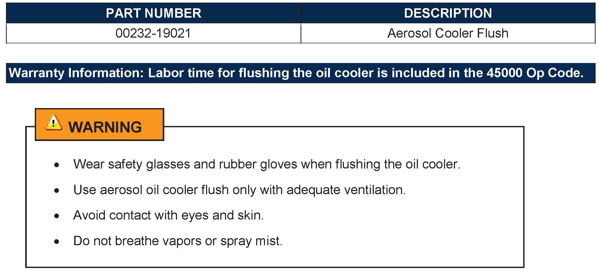
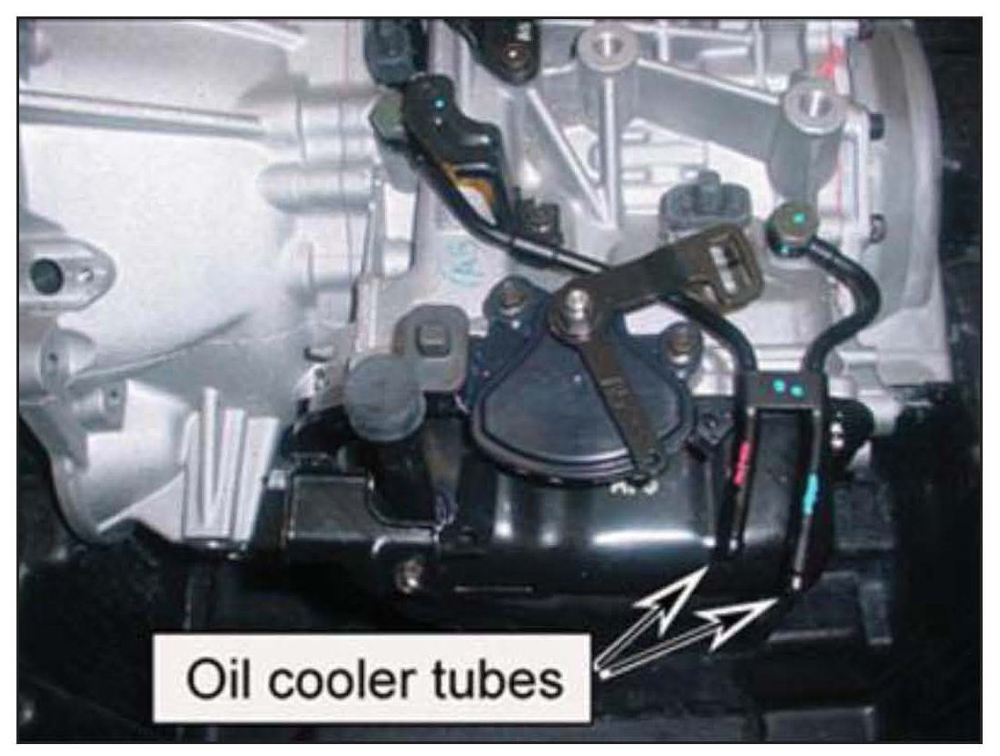
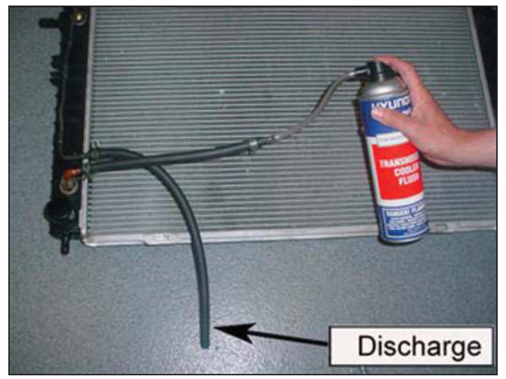
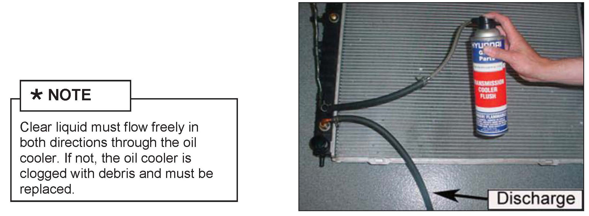
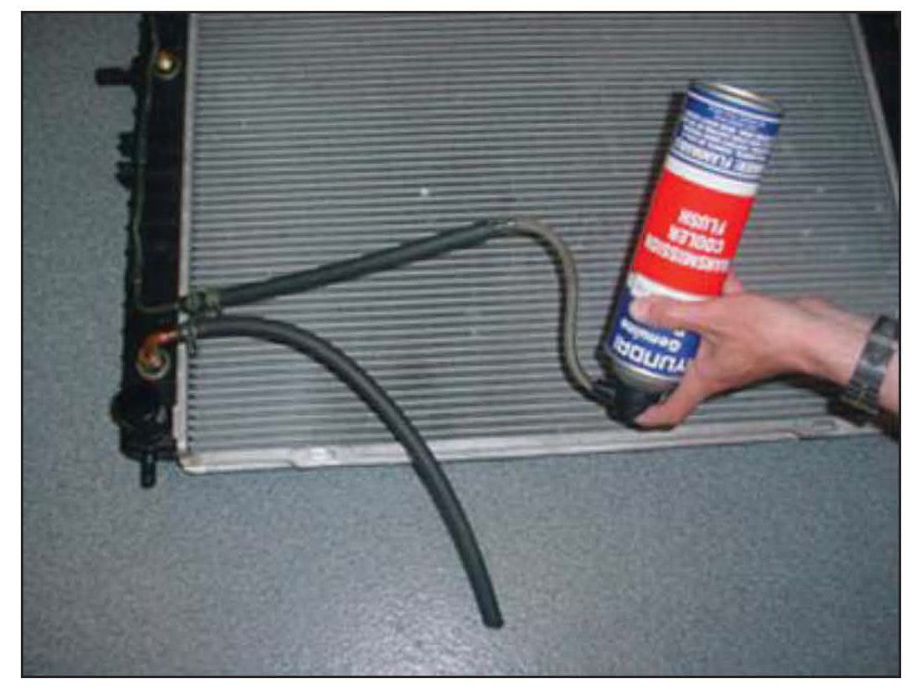

A/T - Oil Cooler Flushing Information
GROUPAUTOMATIC
TRANSMISSION
NUMBER
12-AT-019
DATE
AUGUST 2012
MODEL
ALL
SUBJECT
AUTOMATIC TRANSMISSION OIL COOLER FLUSHING
This TSB supersedes TSB 07-40-011 to include 2013 vehicles.
DESCRIPTION:
Whenever an automatic transaxle is replaced, the oil cooler must be flushed to remove contaminants such as metal particles and clutch material. Failure to flush or improper flushing of the oil cooler may
result in severe damage to the replacement transaxle.
Applicable Vehicles:
ALL except Veloster with Dual Clutch Transmission

PARTS INFORMATION:
SERVICE PROCEDURE

1. Mark the hoses with tape or parts tags so they can be reconnected correctly.
Disconnect the oil cooler inlet and outlet hoses from the oil cooler tubes.

2. Insert the nozzle of the aerosol can to either hose and secure it with a hose clamp. Position the other hose so that it discharges into a waste container.
Remove the protective cap. Hold the can upright and press firmly on the button to release the solution. Flush for 15-20 seconds until clear liquid comes from the outlet hose.

3. Reverse the hoses and flush in the other direction until clear liquid comes from the outlet hose. For best results, use the entire contents of the aerosol can.

4. When the flush has been expelled, turn the can upside down and blow any remaining liquid out of the cooler.
5. Reconnect the cooler hoses to the transaxle and secure with clamps.